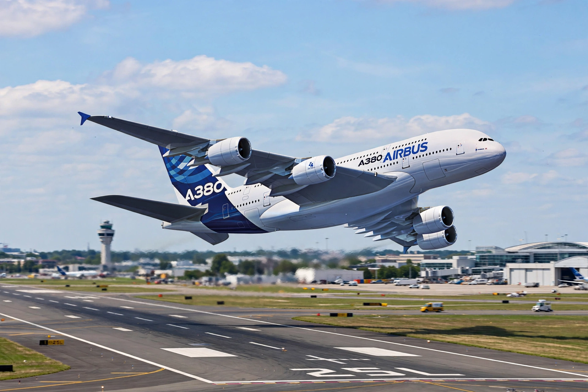

Airbus A380
From Wikipedia, the free encyclopedia

An Airbus A380 at takeoff.The Airbus A380 is a wide-body, double-deck airliner developed and produced by Airbus. It is the world\'s largest passenger airliner: a full-length double deck, typically seating around 555 passengers in three classes and up to 853 in an all-economy layout. First flown in 2005 and entering service with Singapore Airlines in 2007, the A380 was built in Toulouse; only 251 were delivered before production ended in 2021.
Development
Airbus studied an ultra-high-capacity airliner through the 1990s to challenge Boeing\'s 747 monopoly; the A3XX was launched as the A380 in 2000. The first aircraft was unveiled in Toulouse in January 2005 and flew that April. Wiring problems delayed deliveries by about two years.
Design
Four Engine Alliance GP7200 or Rolls-Royce Trent 900 engines power the A380, whose wing was designed for a heavier stretched variant that was never built. Interiors allowed amenities such as showers and onboard lounges on Emirates aircraft. Its size required airport upgrades to gates, taxiways and jet bridges.
Operators and future
Emirates is by far the largest operator with over 100 aircraft and plans to fly them into the 2030s. Other airlines (Singapore Airlines, Qantas, Lufthansa, British Airways, Qatar Airways) retired or retained small fleets; after COVID groundings, several returned A380s to service on dense routes where its economics still work at high load factors.